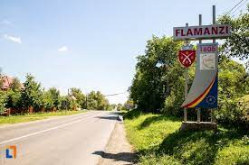

Orașul Flămânzi se învecinează cu comunele Copălău, Frumușica, Hlipiceni și Prăjeni, având o istorie destul de bogată și înteresantă.
Orașul Flămânzi este cunoscut mai ales datorită faptului că de aici s-a declanșat Răscoala de la 1907, eveniment istoric care a marcat viața socială a românilor, înainte de Marea Unire, dar este mai puțin cunoscut faptul că istoricul acestei localități se împletește cu destinele unor mari oameni de stat ai principatului Moldovei, cum ar fi Luca Stroici, Teodor Balș sau Mihail Sturza
Monumentul Răscoalei din 1907 din Flămânzi
Este situat în sudul județului Botoșani, pe drumul european E58 Botoșani-Hârlău. Este înconjurat de terenuri agricole cultivate în principal cu porumb, grâu, floarea soarelui, orz și sfeclă de zahăr. Pășunile și imașurile comunal asigură hrana pentru oile, vitele și caii din gospodăriile țărănești. În sfera industrială se remarcă confecțiile, prelucrarea lemnului (mobilă), prelucrarea laptelui, morărit, transporturi și comerț. Izbucnirea Răscoalei După cum este menționat mai sus, moșia Flămânzi era arendată la 1907 lui Marcu Fischer, un arendaș evreu, care luase în arendă mai tot nordul Moldovei, zona fiind numită în epocă „Fischerland”. Majoritatea țăranilor la începutul secolului al XX-lea nu aveau pământ din care să se întrețină, fiind nevoiți să ia pământ în arendă de la boier sau arendaș. La Flămânzi și nu numai, sistemul arendășesc era o povară în plus pentru țăran, deoarece între acesta și boier intervenea un intermediar: arendașul. Pentru a scoate profit după ce lua în arendă o moșie întreagă, arendașul trebuia să rearendeze pe bucăți țăranului, care astfel era nevoit să scoată mai mulți bani din buzunar. De multe ori arendașii încercau să îi păcălească pe țărani, să scoată cât mai mulți bani din arendă, dar și din munca acestora. La Flămânzi, în preajma declanșării Răscoalei, țăranii erau hotărâți să nu dea arendașului mai mult de 5 lei pe falcie (unitate de măsură a suprafeței de 1,5 ha) peste suma pe care la rândul lui arendașul o plătea boierului. În fiecare an era încheiată o învoială agricolă la comun între țărani și arendaș, în care era stipulat prețul arendei, plus alte obligații în muncă și natură ale țăranului